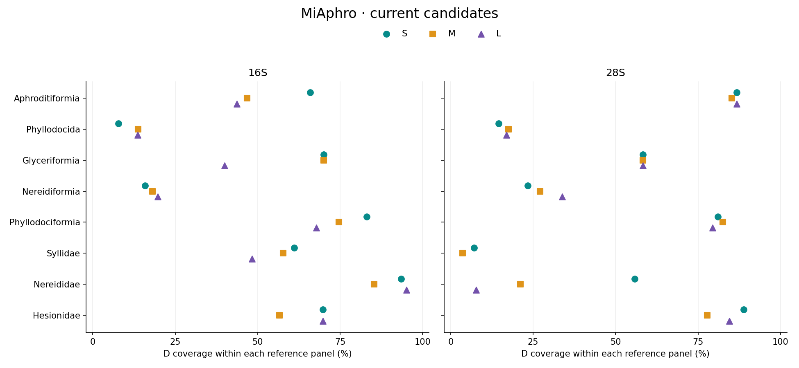
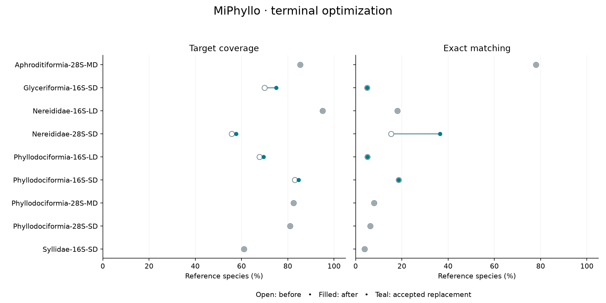

MiPhyllo: taxon-stratified 16S and 28S PCR primer candidates for environmental DNA metabarcoding of PhyllodocidaMiPhyllo: taxon-stratified 16S and 28S PCR primer candidates for environmental DNA metabarcoding of Phyllodocida
Fei Xia
Computational preprint · Curated edition · 5 November 2026
Abstract
Broad taxonomic scope can conflict with reference coverage and background specificity when designing environmental DNA primers for marine annelids. We curated mitochondrial 16S and nuclear 28S candidates from searches of eight nested Phyllodocida target units. Reference panels retained one sequence per named species. Ordinary and degenerate (D) primers shared binding endpoints, with degeneracy limited to eight variants per oligo. The initial collection contained 94 standard pairs and eight relaxed-background alternatives. We retained standard ordinary/D sets when D coverage reached at least 50% and at least one reference species matched exactly, while withdrawing order-wide Phyllodocida and suborder-wide Nereidiformia designs. These operational catalogue criteria retained 24 sets, comprising 48 primer pairs and 96 oligos, across six units. Nereididae 16S LD covered 58/61 references with 11 exact matches; Hesionidae 28S SD covered 40/45 with eight exact matches. Coverage and exact matching remained markedly different for several retained designs. A subsequent joint terminal-degeneracy search replaced four D pairs after independent target/background verification; 44 pairs remain unchanged. Nereididae 28S SD increased from 29/52 covered and eight exact matches to 30/52 and 19, with zero background hits in all four models. The other 54 pairs, source results and previous preprint are archived. The curated collection supports target-specific candidate selection; the thresholds and matching results do not constitute experimental validation.
1. Introduction
Phyllodocida comprises divergent polychaete lineages for which a single short rRNA assay may not reconcile coverage and specificity. Scale-worm phylogenetic reference data provide an established starting point [1], while environmental DNA has been applied to marine metazoan surveys [2]. MiFish illustrates the design principle of conserved primer-binding regions surrounding variable sequence [3]. Here that principle guides annelid candidate searches without transferring fish-primer sequences or assuming equivalent performance.
The original searches considered the order, four suborders and three families. The present revision separates useful candidate sets from low-coverage exploratory outcomes. Phyllodocida remains the scope of MiPhyllo, but its order-wide assay is no longer in the current catalogue. Nereidiformia is represented by three family-level panels. Retained and removed designs are traceable to the same frozen source data.
2. Materials and methods
2.1 References and design
Each gene panel retained one reference per named species, prioritizing sequence completeness during source curation. The original units were Phyllodocida; Aphroditiformia, Glyceriformia, Nereidiformia and Phyllodociformia; and Syllidae, Nereididae and Hesionidae. Nested panels are not independent samples. Direction-adjusted MAFFT alignments [4] guided homologous windows; accession metadata, alignments and frozen backgrounds are distributed with each unit.
Selected spans use S 100-200 bp, M 201-300 bp and L 301-480 bp; original narrower search ranges remain in source scripts. Expanded searches used 18-30 nt oligos and 1 nt start increments, with frequent haplotypes, consensus seeds, staged coverage/exact-match ranking and local refinement. Ordinary/D pairs share all four binding endpoints. Degeneracy is ≤8 per oligo and limited to its 3′ half; the ordinary sequence need not be contained in its D expansion. Thermodynamic filters used 50 nM per variant and 200 nM per direction, minimum predicted Tm ≥45°C, F/R midpoint difference ≤5°C and structure Tm <55°C.
2.2 Matching and background selection
Target coverage required ≤2 mismatches per end, compatible terminal three bases, total product length 100-500 bp and internal length ≥50 bp. Exact matching required zero mismatches at both ends, with IUPAC compatibility treated as a match. All reference species, including fragments lacking the complete window, remain in the denominator. Background scans permit internal gaps of 0-1000 bp. Strict WC/GT allows ≤2 mismatches and requires terminal compatibility; loose WC allows ≤3 mismatches and loose GT ≤2 without terminal constraints. GT additionally permits primer-oriented G:A and T:C compatibility as a sensitivity model.
The original Aphroditiformia study used a six-group polychaete background and limits of ten strict and fifty loose hits per model. Later suborder/family searches used expanded marine and non-target Phyllodocida references, strict WC≤1%, GT≤3%, loose WC≤5%, GT≤10%, and each strict close-relative count≤max(2, floor(3% × close-relative N)). Marine screening used inherited genus-level WoRMS assignments. Background composition differs between panels.
2.3 Catalogue curation and verification
We retained standard ordinary/D sets with D reference coverage ≥50% and at least one exact reference match, preserving the original full background profile. Phyllodocida and Nereidiformia broad-target designs were withdrawn. All alternatives selected without a loose-model veto were archived. The thresholds are operational editorial criteria, not empirically established efficacy thresholds. Ordinary counterparts remain coordinate-matched comparators and need not themselves reach 50% coverage. Lengths are not removed merely because another length has greater coverage.
The curated catalogue initially retained 48 pairs from 102 independently scanned pairs. A subsequent joint terminal search reallocated degeneracy in nine D candidates, fixing the 5′ half, lengths and endpoints. Seeds comprised original concrete expansions and frequent target-window suffixes; masks were jointly assigned across up to three 3′-half positions, including complete terminal-triplet allocation within degeneracy ≤8. Coverage- and exact-oriented shortlists were combined with initial local-search candidates. Replacement required no loss in either target metric, at least one strict improvement, and the original thermodynamic, background and close-relative gates. C++ and Python independently re-scanned the selected sequences. Four D pairs were replaced; 44 pairs remain unchanged. No experimental validation, common-panel comparison or independent holdout test was added.
3. Results
3.1 Retained units and length classes
| Target unit | 16S N | 16S lengths | 28S N | 28S lengths |
|---|
| Aphroditiformia | 94 | S | 68 | S/M/L |
| Glyceriformia | 20 | S/M | 12 | S/M/L |
| Phyllodociformia | 59 | S/L | 63 | S/M |
| Syllidae | 180 | S | 28 | None |
| Nereididae | 61 | S/M/L | 52 | S |
| Hesionidae | 53 | S/M/L | 45 | S/M/L |
Table 1. Available reference species and retained lengths. Each retained length includes an ordinary and a D pair. Syllidae retains its 28S reference library but no current 28S primer. Counts describe each frozen panel and must not be summed across nested units.

Figure 1. D coverage (filled) and exact matching (open) in the retained catalogue. Connectors show their difference. Missing lengths were archived or had no original candidate. Percentages use each panel's own denominator and are not common-panel performance comparisons.
Six target units retain 24 ordinary/D sets (48 pairs, 96 oligos). Neither the order-wide Phyllodocida nor suborder-wide Nereidiformia candidates remain. Phyllodociformia references represent Phyllodocidae only. Glyceriformia references do not include Lacydoniidae. Appendix A lists every retained sequence and its matching outcomes.
3.2 Selection tradeoffs and archived outcomes
The 94 standard and eight conditional original pairs partition into 48 retained and 54 archived pairs. Phyllodocida designs covered at most 71/515 16S and 53/302 28S references; Nereidiformia reached at most 62/315 and 45/133. These outcomes remain available as exploratory results rather than recommended broad-target assays.
Further removals include Aphroditiformia 16S M/L, Glyceriformia 16S L, Syllidae 16S M/L and all its 28S candidates, and Nereididae 28S M/L. Phyllodociformia 16S M and 28S L were archived because their D candidates had no exact reference matches despite coverage above 50%. All eight conditional pairs were archived: relaxed Syllidae alternatives had substantial loose-background matching, whereas the Nereididae 28S alternative also remained below 50% coverage. Per-set decisions and original scores are distributed in the archive.
Retained designs still show tradeoffs. Aphroditiformia 16S SD covers 62/94 but matches only one species exactly; Glyceriformia 16S SD now covers 15/20; MD remains at 14/20, with one exact match each. Syllidae 16S SD covers 110/180 with seven exact matches. Nereididae 16S LD covers 58/61 with 11 exact matches but has strict WC/GT background counts of 30/58, compared with 0/12 for SD (57/61 covered). Nereididae 28S SD now covers 30/52 with 19 exact matches and zero hits in all four background models. Hesionidae 28S SD covers 40/45 with eight exact matches.
4. Discussion
Catalogue inclusion should reflect a plausible target scope and transparent tradeoffs, not the mere existence of a search result. The present pruning removes clearly weak broad-target outcomes and avoids filling every gene-by-length cell. It preserves different retained lengths because coverage alone does not establish their equivalence for fragmented DNA or the taxonomic resolution of the internal amplicon.
The 50% coverage and nonzero-exact criteria provide a reproducible editorial boundary. They are not optimized or validated biological cutoffs, and several retained candidates have very low exact-match rates. Thus inclusion does not imply uniform performance across a lineage. Reference availability, incomplete fragments and uneven family representation affect all estimates. Ordinary primers are comparators rather than independent confirmations of D performance. Concentration effects of degeneracy and sensitivity to mismatches remain unmeasured experimentally.
Stratification narrows the target and changes the non-target background; it does not demonstrate that family assays outperform suborder assays on a common panel. Three Nereidiformia family panels do not cover every family of that suborder. Archived sequences, scores and the former preprint preserve the search history without presenting all outcomes as current recommendations.
5. Conclusion and data availability
MiPhyllo retains 48 computational primer pairs across six target units and archives 54 other pairs. Sequences, references, matching outcomes, selection decisions, source algorithms and independent verification records are available at github.com/GUIBA-EX/MiPhyllo. Current identifiers follow MiPhyllo-{target}-{gene}-{S|M|L}[D]_{F|R}. Copyright © 2026 Fei Xia; repository copyright and third-party data terms apply.
Terminal optimization: nine-pair comparison
| D pair | Covered | Exact | Strict WC/GT | Loose WC/GT |
|---|
| Aphroditiformia-28S-MD | 58 → 58/68 | 53 → 53/68 | 1/2 → 1/2 | 17/2 → 17/2 |
| Glyceriformia-16S-SD | 14 → 15/20 | 1 → 1/20 | 14/33 → 13/33 | 113/104 → 107/105 |
| Nereididae-16S-LD | 58 → 58/61 | 11 → 11/61 | 30/58 → 30/58 | 166/285 → 166/285 |
| Nereididae-28S-SD | 29 → 30/52 | 8 → 19/52 | 0/0 → 0/0 | 0/0 → 0/0 |
| Phyllodociformia-16S-LD | 40 → 41/59 | 3 → 3/59 | 0/1 → 0/0 | 76/29 → 80/31 |
| Phyllodociformia-16S-SD | 49 → 50/59 | 11 → 11/59 | 0/8 → 0/12 | 81/11 → 82/15 |
| Phyllodociformia-28S-MD | 52 → 52/63 | 5 → 5/63 | 21/26 → 21/26 | 95/42 → 95/42 |
| Phyllodociformia-28S-SD | 51 → 51/63 | 4 → 4/63 | 7/23 → 7/23 | 53/53 → 53/53 |
| Syllidae-16S-SD | 110 → 110/180 | 7 → 7/180 | 1/2 → 1/2 | 15/2 → 15/2 |
Table 2. Before and after joint degeneracy redistribution. Four replacements were accepted. Ordinary sequences and all endpoints remained fixed. The full original background gates, including the close-relative gate, were retained; small increases in individual background counts are reported rather than treated as zero cost.

Figure 2. Coverage and exact matching before (open) and after (filled) optimization. Teal indicates accepted replacements. Each pair uses its own reference denominator.
Syllidae 16S SD retained its sequence: 74,215 forward and 82,665 reverse allocations generated no shortlisted pair improving one target metric without reducing the other. The 16 species excluded by its terminal constraint remain excluded. These staged searches are not proofs of global optimality. Per-pair candidate and background results are available under optimization/terminal_2026-11-05/.
MiPhyllo: computational
review addendum
This addendum accompanies the 5 November 2026 curated preprint and
does not replace its primary catalog or claim experimental
validation.
Methods
All 48 retained pairs were rescanned against their own frozen target
and background panels using independent C++ and Python implementations.
Homologous projected terminal 1/3/5 compatibility was summarized per end
and record. Primer3-py 2.4.0 was used to expand all IUPAC variants and
calculate hairpin, homodimer, within-direction heterodimer and
forward/reverse heterodimer temperatures under 50 nM per variant and 200
nM per direction. We recorded the difference between minimum primer Tm
and maximum modeled structure Tm. Clean recovered internal inserts were
compared by exact identity against inserts recovered by the same
assay.
Results
All 48 pairs passed the basic structure gates, while eight had a
minimum margin below 5°C in at least one scenario, three with negative
margins. Seven of 24 D pairs lost reference records under the
terminal-triplet condition relative to an otherwise equivalent
unconstrained-terminal paired scan. Among recovered inserts, for
example, 37 of 56 Aphroditiformia 28S MD records were unique against the
other recovered species labels. These denominators do not include
undetected competitors.
A finite single-substitution screen of the eight low-margin pairs
held terminal triplets fixed. One Nereididae 16S LD candidate, F
TTAATTGAAGGCYRGTATGA and R CAATGTGATCTCTCTARY,
yielded a 5.67°C minimum margin versus −2.08°C for the original. It
matched the same 58/61 target records and the same 11 exactly; strict
WC/GT background counts were 30/58 for both, while relaxed WC/GT counts
were 166/285 and 166/282, respectively. An independent implementation
confirmed target accession sets and background counts. This is an
exploratory computational candidate, not a replacement in the released
catalog.
Limitations and data
The retrospective search uses the design libraries; there is no
independently sampled test set or wet-lab confirmation. Reference insert
uniqueness is conditional on recovery, one reference per species and
clean inserts; it is not full-library species resolution or a
barcode-gap analysis. Some homologous windows cannot distinguish indels
from incompleteness. The one-substitution search is finite and cannot
rule out better shifted-window or clade-specific alternatives. Complete
tables, source code, settings and terminal 1/3/5 audits are in
audit/review_20261107/ and
scripts/review_*.py.
References
[1] Norlinder E et al. (2012). Phylogeny of scale-worms (Aphroditiformia, Annelida), assessed from 18SrRNA, 28SrRNA, 16SrRNA, mitochondrial cytochrome c oxidase subunit I (COI), and morphology. Molecular Phylogenetics and Evolution. PMID: 22789762.
[2] Environmental DNA metabarcoding for monitoring metazoan biodiversity in Antarctic nearshore ecosystems (2021). PeerJ 9:e12458. doi:10.7717/peerj.12458.
[3] Miya M et al. (2015). MiFish, a set of universal PCR primers for metabarcoding environmental DNA from fishes: detection of more than 230 subtropical marine species. Royal Society Open Science 2:150088. doi:10.1098/rsos.150088.
[4] Katoh K, Standley DM (2013). MAFFT multiple sequence alignment software version 7: improvements in performance and usability. Molecular Biology and Evolution 30:772–780. doi:10.1093/molbev/mst010.
Appendix A1. Aphroditiformia
Canonical prefix: MiPhyllo-Aphroditiformia-. Sequences are 5′→3′. Covered and exact counts use the full target reference denominator. Strict and loose background values are WC/GT. Ordinary primers are same-coordinate comparators.
| Gene/pair | bp | Covered | Exact | Strict bg | Loose bg |
|---|
| 16S-S | 138 | 58/94 | 1/94 | 0/0 | 23/0 |
| 16S-SD | 138 | 62/94 | 1/94 | 0/0 | 25/0 |
| 28S-S | 148 | 54/68 | 29/68 | 0/0 | 16/2 |
| 28S-SD | 148 | 59/68 | 47/68 | 2/2 | 19/2 |
| 28S-M | 250 | 56/68 | 50/68 | 0/0 | 16/0 |
| 28S-MD | 250 | 58/68 | 53/68 | 1/2 | 17/2 |
| 28S-L | 368 | 58/68 | 22/68 | 0/0 | 15/0 |
| 28S-LD | 368 | 59/68 | 33/68 | 0/1 | 18/1 |
Primer sequences
| Gene/pair | Forward | Reverse |
|---|
| 16S-S | ATAAACTACCTTAGGGATAACA | GAGATTTAACAGTTGAACAAAC |
| 16S-SD | ATAAACTACCTYRGGGATAACA | GAGATTTAACAGTTGAACRAAC |
| 28S-S | CTCAGAGGCAAACTGATGGGAC | GCTCTCCTCGTGGAAAGGGC |
| 28S-SD | CTCAGAGGCAAACYGATGGGAC | GCTCTCCTCGYRGAAAGKGC |
| 28S-M | AATCCCCTGTCGCTGCGGCA | TCCCTCACGGTACTTGTCCGCT |
| 28S-MD | AATCCCCTGTCGYTGCGGCA | TCCCTCACGGTACTTGTCCKCT |
| 28S-L | CTCAGAGGCAAACTGATGGGAC | CGGAACACACTGTAAACAGTCC |
| 28S-LD | CTCAGAGGCAAACYGATGGGAC | CGGAACACACTGTRAACAGTCC |
Binding coordinates, accessions and per-species matches: panels/Aphroditiformia/results.csv and species.csv. Ordinary/D counterparts share all four endpoints. No archived candidate is included in these tables.
Appendix A2. Glyceriformia
Canonical prefix: MiPhyllo-Glyceriformia-. Sequences are 5′→3′. Covered and exact counts use the full target reference denominator. Strict and loose background values are WC/GT. Ordinary primers are same-coordinate comparators.
| Gene/pair | bp | Covered | Exact | Strict bg | Loose bg |
|---|
| 16S-S | 110 | 8/20 | 0/20 | 2/3 | 60/27 |
| 16S-SD | 110 | 15/20 | 1/20 | 13/33 | 107/105 |
| 16S-M | 252 | 7/20 | 1/20 | 1/1 | 40/17 |
| 16S-MD | 252 | 14/20 | 1/20 | 10/13 | 81/35 |
| 28S-S | 106 | 7/12 | 4/12 | 0/2 | 1/28 |
| 28S-SD | 106 | 7/12 | 6/12 | 0/3 | 7/31 |
| 28S-M | 236 | 5/12 | 4/12 | 0/4 | 90/35 |
| 28S-MD | 236 | 7/12 | 4/12 | 0/4 | 93/35 |
| 28S-L | 324 | 5/12 | 4/12 | 0/1 | 49/26 |
| 28S-LD | 324 | 7/12 | 4/12 | 0/1 | 49/26 |
Primer sequences
| Gene/pair | Forward | Reverse |
|---|
| 16S-S | TAAATTTTGTTGGGGCGACA | ATCCCTAAGGTAGCTATTTCCT |
| 16S-SD | TAAATTTTGTTGGGGCGACA | ATCCCTATGGTAGCTRTTTYMT |
| 16S-M | CACGAAAATAAAGCTGTCTC | CCCTAAGGTAGCTATTTCCT |
| 16S-MD | CACGAAAATAAWDCTGTCTC | CCCTAAGGTAGCTRTTTYCT |
| 28S-S | ACGGCGAGTGAAGCGGGAAGAG | CTCGGACGCCAGAACGCTGC |
| 28S-SD | ACGGCGAGTGAAGCGGGAWGAG | CTCGGACGCCASAMCRCTGC |
| 28S-M | GCGGACAAGTACCGTGAG | GAAAACCGGTCGTGGCTA |
| 28S-MD | GCGGACAAGTACCGTGAG | GAAAACCGGTCGTGGCYA |
| 28S-L | CGTCCTTGGAGTCGGGTTGT | CGGAAAACCGGTCGTGGCTA |
| 28S-LD | CGTCCTTGGAGTCGGGTTGT | CGGAAAACCGGTCGTGGCYA |
Binding coordinates, accessions and per-species matches: panels/Glyceriformia/results.csv and species.csv. Ordinary/D counterparts share all four endpoints. No archived candidate is included in these tables.
Appendix A3. Phyllodociformia
Canonical prefix: MiPhyllo-Phyllodociformia-. Sequences are 5′→3′. Covered and exact counts use the full target reference denominator. Strict and loose background values are WC/GT. Ordinary primers are same-coordinate comparators.
| Gene/pair | bp | Covered | Exact | Strict bg | Loose bg |
|---|
| 16S-S | 118 | 31/59 | 2/59 | 0/0 | 10/3 |
| 16S-SD | 118 | 50/59 | 11/59 | 0/12 | 82/15 |
| 16S-L | 308 | 27/59 | 2/59 | 0/0 | 9/4 |
| 16S-LD | 308 | 41/59 | 3/59 | 0/0 | 80/31 |
| 28S-S | 198 | 49/63 | 4/63 | 5/18 | 35/30 |
| 28S-SD | 198 | 51/63 | 4/63 | 7/23 | 53/53 |
| 28S-M | 298 | 12/63 | 6/63 | 0/0 | 44/12 |
| 28S-MD | 298 | 52/63 | 5/63 | 21/26 | 95/42 |
Primer sequences
| Gene/pair | Forward | Reverse |
|---|
| 16S-S | ATAGTTACCATAGGGATAACAGGC | ACCAACCCTTATAGACTGCTAC |
| 16S-SD | ATAGTTACCATADGGATAACAGGY | ACCAACCCTTATARRCTGCTRC |
| 16S-L | ACCTAAATTTTAATGAAAGACA | TTGAACAAACCAACCCTT |
| 16S-LD | ACCTAAATTTTWATRAARGACA | TTGAACAAACYAACCCTY |
| 28S-S | GAAAGCCACGACCGGTTC | CACTGTGAACAGTCCTCGCCAG |
| 28S-SD | GAAAGCCACGACCGGTTC | CACTGTGAACAGTCCTCVCCWG |
| 28S-M | GTCCTTGGAGTCGGGTTGTTTG | AAAGTGCGCCCACCGACCAC |
| 28S-MD | GTCCTTGGAGTCGGGTTGTTTG | AAAGTGCACCCACCGACNRC |
Binding coordinates, accessions and per-species matches: panels/Phyllodociformia/results.csv and species.csv. Ordinary/D counterparts share all four endpoints. No archived candidate is included in these tables.
Appendix A4. Syllidae
Canonical prefix: MiPhyllo-Syllidae-. Sequences are 5′→3′. Covered and exact counts use the full target reference denominator. Strict and loose background values are WC/GT. Ordinary primers are same-coordinate comparators.
| Gene/pair | bp | Covered | Exact | Strict bg | Loose bg |
|---|
| 16S-S | 142 | 55/180 | 2/180 | 0/2 | 4/2 |
| 16S-SD | 142 | 110/180 | 7/180 | 1/2 | 15/2 |
Primer sequences
| Gene/pair | Forward | Reverse |
|---|
| 16S-S | AAAGACAGAAAGACCCTA | CCCTACAGTAGCTTACTTAT |
| 16S-SD | AAAGACAGAAAGWCCCTH | CCCTACAGTARCTTACTTRW |
Binding coordinates, accessions and per-species matches: panels/Syllidae/results.csv and species.csv. Ordinary/D counterparts share all four endpoints. No archived candidate is included in these tables.
Appendix A5. Nereididae
Canonical prefix: MiPhyllo-Nereididae-. Sequences are 5′→3′. Covered and exact counts use the full target reference denominator. Strict and loose background values are WC/GT. Ordinary primers are same-coordinate comparators.
| Gene/pair | bp | Covered | Exact | Strict bg | Loose bg |
|---|
| 16S-S | 194 | 30/61 | 7/61 | 0/0 | 16/6 |
| 16S-SD | 194 | 57/61 | 7/61 | 0/12 | 51/25 |
| 16S-M | 212 | 52/61 | 8/61 | 5/9 | 48/12 |
| 16S-MD | 212 | 52/61 | 8/61 | 8/14 | 66/19 |
| 16S-L | 412 | 38/61 | 6/61 | 0/40 | 66/106 |
| 16S-LD | 412 | 58/61 | 11/61 | 30/58 | 166/285 |
| 28S-S | 150 | 19/52 | 1/52 | 0/0 | 0/0 |
| 28S-SD | 150 | 30/52 | 19/52 | 0/0 | 0/0 |
Primer sequences
| Gene/pair | Forward | Reverse |
|---|
| 16S-S | AATTTGGTTGGGACAACC | CTGTCAATGTGGTCTCTCTAGT |
| 16S-SD | AATTTGGTTGGGACRAYY | CTGTCAATGTGRTCTCTCTARY |
| 16S-M | AAGGACAAGAAGACCCTA | AATAGTTACACTAAGCCAAC |
| 16S-MD | AAGGACAAGAAGACCCTA | AATAGTTACAYWRAGCCAAC |
| 16S-L | TTAATTGAAGGCTAGTATGA | CAATGTGATCTCTCTAGT |
| 16S-LD | TTAATTGAAGGYYRGTATGA | CAATGTGATCTCTCTARY |
| 28S-S | GACGCGTGCACTTTCCGG | CAGAGGGCCTGCGACTCG |
| 28S-SD | GACGCGTGCACTTBCCRG | CAGAGGGCCTGCGACYNG |
Binding coordinates, accessions and per-species matches: panels/Nereididae/results.csv and species.csv. Ordinary/D counterparts share all four endpoints. No archived candidate is included in these tables.
Appendix A6. Hesionidae
Canonical prefix: MiPhyllo-Hesionidae-. Sequences are 5′→3′. Covered and exact counts use the full target reference denominator. Strict and loose background values are WC/GT. Ordinary primers are same-coordinate comparators.
| Gene/pair | bp | Covered | Exact | Strict bg | Loose bg |
|---|
| 16S-S | 188 | 28/53 | 2/53 | 1/7 | 1/7 |
| 16S-SD | 188 | 37/53 | 1/53 | 1/43 | 32/44 |
| 16S-M | 258 | 24/53 | 1/53 | 22/43 | 48/47 |
| 16S-MD | 258 | 30/53 | 3/53 | 22/44 | 68/48 |
| 16S-L | 362 | 28/53 | 2/53 | 2/8 | 7/27 |
| 16S-LD | 362 | 37/53 | 3/53 | 2/60 | 50/69 |
| 28S-S | 196 | 31/45 | 3/45 | 5/14 | 22/17 |
| 28S-SD | 196 | 40/45 | 8/45 | 10/44 | 78/70 |
| 28S-M | 252 | 28/45 | 6/45 | 1/4 | 17/7 |
| 28S-MD | 252 | 35/45 | 7/45 | 2/8 | 47/11 |
| 28S-L | 416 | 38/45 | 1/45 | 22/29 | 77/33 |
| 28S-LD | 416 | 38/45 | 1/45 | 22/29 | 77/33 |
Primer sequences
| Gene/pair | Forward | Reverse |
|---|
| 16S-S | TGAACTAAGGTTTTAACGGC | AAACTCTATAGGGTCTTCTTGTCT |
| 16S-SD | TGAATTACGGYTTHAACGGC | AAACTCAATAGGGTCTTCTTGTCY |
| 16S-M | ACGGTTTTAACGGCCGCGGT | TCCCCAGTCGCCCCAACTAA |
| 16S-MD | ACGGTTTTAACGGCYGCGGT | TCCCCAGTCGCCCCAACYAA |
| 16S-L | TGAACTAAGGTTTTAACG | ATTAGCCTGTTATCCCTA |
| 16S-LD | TGAATTACGGYTTHAACG | ATTAGCCTGTTAYCCCTR |
| 28S-S | CACTTTCCGCGGGGAGAG | TGTGAACAGTCCTCCCCAGT |
| 28S-SD | CACTTTCCGYSGRGAGAG | TGTGAACAGTCCTYCCMRGT |
| 28S-M | GACGAGCGCACTTTCCGC | GAAGCACTGTGAACAGTCCT |
| 28S-MD | GACGAGCGCACTTTCCRB | GAAGCACTGTRRRCAGTCCT |
| 28S-L | GAGTCGGGTTGTTTGAGAATGCAGCCCA | CGAGCCATAGGACGGGCACGGC |
| 28S-LD | GAGTCGGGTTGTTTGRGAATGCAGCCCA | CGAGCCATAGGACGGGCACGGC |
Binding coordinates, accessions and per-species matches: panels/Hesionidae/results.csv and species.csv. Ordinary/D counterparts share all four endpoints. No archived candidate is included in these tables.